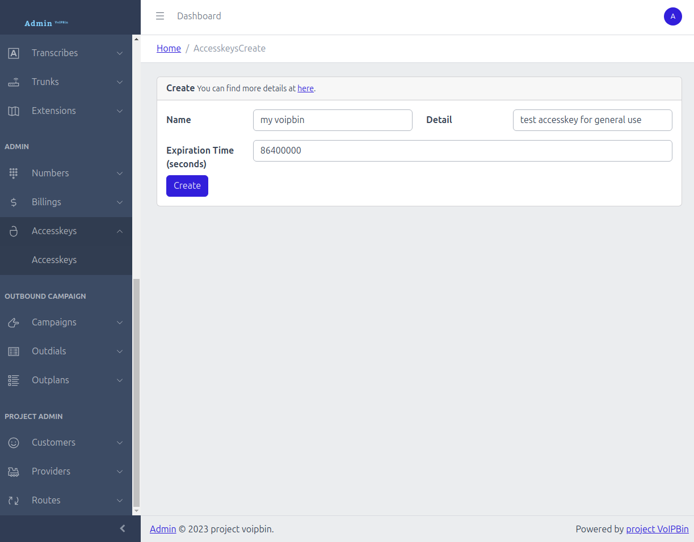

Authentication
In this Quickstart, you’ll learn how to authenticate your requests using either a Token or an Accesskey.
To interact with the VoIPBIN API, you need to authenticate your requests using either a Token or an Accesskey. Both options serve the same purpose — validating your request and authenticating your identity.
Generate Token
To generate a JWT token, send a request with your username and password, as shown in the example below:
$ curl --request POST 'https://api.voipbin.net/auth/login' \
--header 'Content-Type: application/json' \
--data-raw '{
"username": "your-voipbin-username",
"password": "your-voipbin-password"
}'
{
"username": "your-voipbin-username",
"token": "eyJhbsdiOiJIUzI1NiIsInR5cCI6IkpXVCJ9.eyJjdXN0b21lciI6IntcImlkXCI6XCI1ZTRhMDY4MC04MDRlLTExZWMtODQ3Ny0yZmVhNTk2OGQ4NWJcIixcInVzZXJuYW1lXCI6XCJhZG1pblwiLFwibmFtZVwiOlwiYWRtaW5cIixcImRldGFpbFwiOlwiYWRtaW4gYWNjb3VudFwiLFwid2ViaG9va19tZXRob2RcIjpcIlBPU1TcIixcIndlYmhvb2tfdXJpXCI6XCJodHRwczovL2VubG1ieXVqamowbWcueC5waXBlZHJlYW0ubmV0XCIsXCJsaW5lX3NlY3JldFwiOlwiYmE1ZjA1NzVkODI2ZDViNGEwNTJhNDMxNDVlZjEzOTFcIixcImxpbmVfdG9rZW5cIjpcInRzZklpREIvMmNHSTVzSFJNSW9wN1MzU1M0S3NiRWxKL3VrUUtzNkxwSFkxWG9GM2hxdi9sF0CtLg0SY9U0"
}
The token will be valid for 7 days.
Generate Accesskey
You can generate your access key directly from the VoIPBIN admin page, as shown in the image below.
To use the API, you will need an access key, so generating it from the admin page is required. When creating the access key, you can specify an expire parameter to define how long the access key will remain valid.
For more details on how to use the Accesskey, refer to the full tutorial here.
Using Your Token or Accesskey
You can use either a Token or an Accesskey for authentication in API requests. Both serve the same purpose, so choose the one that best fits your workflow.
For Token: Include it in the request header or body when making API requests.
For Accesskey: Include the access key token in the accesskey query parameter when making API requests.
Example to retrieve a list of access keys
Using Accesskey:
$ curl -k --location --request GET 'https://api.voipbin.net/v1.0/accesskeys?accesskey=AuTKq6F5ABCD3xw9'
Using Token (in the request header):
$ curl -k --location --request GET 'https://api.voipbin.net/v1.0/accesskeys' \
--header 'Authorization: Bearer <your-token>'
Using Token (in the request parameter):
$ curl -k --location --request GET 'https://api.voipbin.net/v1.0/accesskeys?token=<your token>'